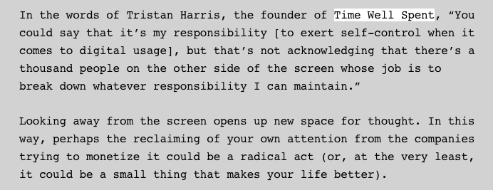

(Funnily, as I wrote this, I got a notification on my phone to “tap in” to a group meditation app. It is 3 PM and I ignore it, as I have every day since I downloaded the app, eight days ago. I think about the irony of a meditation app interrupting my writing flow—a headspace it is extremely hard for me to get into in the first place.)
I no longer resist the entropy. It is, as it always has been, a reveling in a loaded space. The icons that have replaced titles in tabs no longer carry a sense of urgency or weight as they once did—and just as quickly as I accumulate them, I can leave them, although I hardly do. (So maybe, then, I can’t leave them as easily as I think.)
The way that I approach information overload is by closing my laptop and leaving. I wish it was far more intentional, a more deliberate navigation, or that my internet usage was a bit more moderated. As Fowler said, perhaps the reclaiming of your own attention from the companies trying to monetize it could be a radical act. I find myself too deep in the idea that knowledge is power and I have dedicated a fraction of myself to hoarding it, regardless of how much I know that information consumption can be the building of a library just as much as it can be the accumulation of trash. And a lot of my twitter feed is, indeed, trash.
I let my phone die and when it does, I leave it dead for hours. I continue knitting a scarf that has now grown too heavy and too wide to be a scarf, but is too small and too short to be a blanket. Perhaps it is a blanket for a baby, and this reminds me that I often want to sleep in a basket.
I think of studies that have said even being in the same room as a screen is enough to disturb the peace. I think of the common advice to put your phone away a half hour, hour before you intend to go to bed. Even though I can recognize the merit of both, I hardly heed either, and still toss and turn at night wondering why it takes too long to fall asleep. Every second feels like a year. I pick up my phone again. And I think about how much bodily autonomy I seem to lose each time, relinquished over to a world with an eternal energy and movement that I am trying, in the stillness of the night, to remove myself from. I can relate to Fowler’s feeling like there is so much space in the world without your phone. Breathable, walkable, space. The ground that you walk on feels like it is yours for the first time. And yet—what is it about a space without air that is so alluring? Intoxicating? Have we all become so accustomed to forgetting how to breathe?